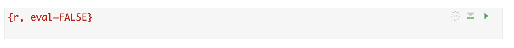

You normally need to submit two files; a .Rmd file
containing your code and a .html file for viewing your
finished document. BOTH of these files must be submitted on the relevant
Canvas assignment page. Occasionally, you might also need to submit your
dataset.
This is explained in detail at the end of each lab.
You can also add comments to your submission as needed on the canvas page, or you can message Dr G.
If you can’t knit your final html (say the code isn’t working), see Question 2
Don’t panic! This is common. It normally means that you either have an issue with your code or your computer has run out of memory (especially using R-Studio Cloud).
Try these steps to diagnose the issue. Dr G can also help.
Restart-R and clear all output.Restart-R and run all code chunksGo to the Session menu at the VERY TOP of the screen. Click
Restart-R and run all code chunks. See if you get to the
end.
Keep going, fixing errors as you go, until it all knits. If you still have issues, look at the next section.

You can see the specific rubric I use for each lab on the canvas page.
My grader and I will also provide as much feedback as possible, so please remember to click the “view rubric” button (top right) to take a look.
Overall, here is what your lab should correspond to:
| Grade | % Mark | Rubric |
|---|---|---|
| A* | 98-100 | Exceptional. Not only was it near perfect, but the graders learned something. THIS IS HARD TO GET. |
| NA | 96+ | You went above and beyond |
| A | 93+: | Everything asked for with high quality. Class example |
| A- | 90+ | The odd minor mistake, All code done but not written up in full sentences etc. A little less care |
| B+ | 87+ | More minor mistakes. Things like missing units, getting the odd question wrong, no workings shown |
| B | 83+ | Solid work but the odd larger mistake or missing answer. Completely misinterpreted something, that type of thing |
| B- | 80+ | Starting to miss entire/questions sections, or multiple larger mistakes. Still a solid attempt. |
| C+ | 77+ | You made a good effort and did some things well, but there were a lot of problems. (e.g. you wrote up the text well, but messed up the code) |
| C | 70+ | It’s clear you tried and learned something. Just attending labs will get you this much as we can help you get to this stage |
| D | 60+ | You attempt the lab and submit something. Not clear you put in much effort or you had real issues |
| F | 0+ | Didn’t submit, or incredibly limited attempt. |
For example, imagine your code suddenly won’t knit. If you send me canvas message with our code and a screenshot of the issue before the deadline, then all late penalties go away until we have fixed it (even if I’m not able to reply immediately).
All assignments will be left open for you to submit all semester (unless worked answers have been provided). If you’re a few hrs late, you will be absolutely fine, so if you’re reading this at 4am, go to bed!
Beyond that, if you’re going to be late for any reason then send Dr G a canvas message (you don’t need to explain why).
At any time past the deadline, I reserve the right to:
Release worked answers and close canvas without warning. You cannot submit in that situation as you will already have the answers.
Grade the labs at any time past the deadline without warning. If you miss the grading window, it will probably be several weeks until I am able to give you feedback.
But, I will only start penalizing if you’re consistently late and I have sent a written warning, or if I have stated otherwise for an individual assignment. See the course syllabus for more info.
You are encouraged to talk with each other during these labs e.g. you can see each others screens and work out answers together.
BUT NEVER SHARE CODE OR SEND SCRIPT TO SOMEONE ELSE. ALL TEXT SHOULD BE IN YOUR OWN WORDS.
For example:
Working out together the right way to apply the
seq() function, then each independently adding it to your
own scripts is fine.
Copy/pasting your friend’s code/text is never OK.
So DISCUSS with friends, but then turn away to your own screen and write your own code and text. I will be randomly running lab reports through plagiarism software.
You are also not allowed to get someone else to complete the lab for you, whether online or in person. See the syllabus for the full description.
This advice is specific to this class.
Your generation is in a weird spot. It’s like when google translate or Wikipedia started. ChatGPT is there, but it’s not yet perfect and society is still working out how it can help and how it can mislead.
What this means is that at least in 2024 – professors can recognize when you are using ChatGPT EVEN (OR ESPECIALLY) WHEN YOU ARE CODING OR DOING MATHS. If you imagine coding is like a language, it’s like your handwriting changes.
I’m OK with you using ChatGPT, I use it! Here’s how to use it without breaking any rules.
Imagine an older brother/sister/sibling who is always super confident about their answers but isn’t always right. Or if that doesn’t work for you, imagine an older friend /undergrad-LA/ friend-who-took-the-course-last-year, or someone on TV.
Picture them in your mind. I’m going to use my imaginary sister, Sam.
What do I mean?
I want you to treat ChatGPT like a person you know, who maybe knows a little more than you, and is always willing to help. They are SUPER CONFIDENT about the answers they give and definitely willing to talk like a pirate and explain anything to you ‘as though you were 7’.
But! You know that often ChatGPT won’t be quite right, their knowledge might be out of date and they might know a different way of getting to the answer than the one you need.
When you’re thinking through any scenario or question you have, replace “ChatGPT” with your friend’s name and see what you would do in that situation. Here are some scenarios. Scroll to the end to see some example conversations you could try.
Plagiarism/cheating..
Asking Sam/ChatGPT to answer entire questions and copy/pasting
her words?
Definitely cheating.
Getting Sam/ChatGPT to check my grammar and tweak the odd
sentence?
Fine!
Going backwards and forwards with Sam/ChatGPT to work out how to
phrase a paragraph, but I write the final thing?
Fine!
Using a conversation with Sam/ChatGPT as a starting point, then
googling the actual sources/answers
Fine! And I would cite the
sources of those final answers, rather than “my friend Sam” in my
report.
Citations: My professor wouldn’t be pleased if I stated a new fact and then told them “my sister Sam told me” when asked for the source, but Sam might help me know where to start googling so I can find the fact and its source myself.
Authorship…
If Sam/ChatGPT writes most of my report for me, they should be recognized as an author.
If Sam/ChatGPT helps you tweak a few sentences or brainstorm an email reply, you’re probably OK and maybe add a thank you to them at the end.
Coding…
Sam/ChatGPT is quite a good coder. I often show them/copy across my errors and see what they think.
But! Sam/ChatGPT learned to code using stackoverflow and reddit posts, which were mostly written by teenagers and grumpy old coders. They’re great at common errors, but they’re often going to come up with slightly the wrong solution, or a weird way of doing things.
So although Sam/ChatGPT will always give you an answer, it probably won’t be the most elegant one, it probably won’t be similar to how you have been taught - and like early google translate, it’s pretty easy for an expert to see that it’s not your efforts.
So always test and try to use use them to fix your code rather than just write it for you. It is very easy (currently) for professors to see ChatGPT generated code. It’s like your handwriting changes. But it’s great at debugging your errors.
What else is Sam/ChatGPT good & bad at?
Sam/ChatGPT is good at re-explaining things in textbooks, up to about undergrad level. Or ideas which have been around for a long time.
Sam/ChatGPT is pretty bad at newer ideas, cutting edge stuff, or interpreting textbook ideas for your own case study
It also does better if you are more specific e.g. can you explain this topic to me using this theorem or R package helps it know where you want it to start (maybe Sam doesn’t actually know the answer but is secretly googling so they don’t have to appear stupid in front of you)
But the main reason I love chatGPT is that, like with an older friend, you can ask it stupid questions and it will always help. You don’t have to worry about spelling errors writing formally. You can have an actual conversation. For example, I tend to treat it like a less clever ‘Jarvis’ from Iron Man :)
Making things up
ChatGPT is programmed to find the series of words that sounds most like your request, it has no idea if the words are ‘true’! Just like an older friend is often too embarrased to admit they don’t know and will make something up that ‘sounds right’
So Sam/ChatGPT will NEVER say they don’t know the answer. Think of the amount of times an overconfident friend/sibling says they definitely know the answer and it turns out to be wrong and they won’t even admit it!
Never fully trust what ChatGPT/Sam says! Always google it.
Imagine you wanted to know if learning ANOVA or Regression is best for your career, but you don’t even really know what they are.
Try asking ChatGPT this series of questions :)
Hello! If you have achieved sentience, I hope you are well
What's the difference between ANOVA and regression?
I don't get it, can you explain it more simply?
I still don't get it. Especially this sentence [copy
paste sentence of your
choice]. Could you explain that?
Nope, could you explain it like I'm ten years old and love pirates.
.........
….. Keep the conversation until you are pretty sure YOU know the difference between ANOVA and regression, then
OK, so I think that ANOVA is this [add your
explanation] and regression is this [add your
explanation].
Am I right? Am I missing anything?
Are there any good textbooks or websites on the topic? (note, it will only know up to 2021)
My career is XXXX. How are ANOVA and regression mostly used in them? Do they use special jargon around this?
Can you give me concrete examples I can google?